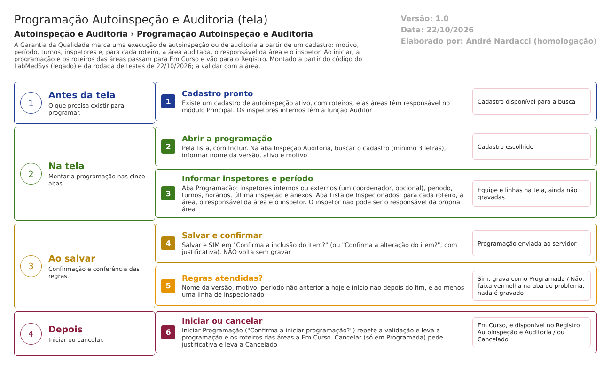

Fluxograma no arquivo 04-programacao-autoinspecao-e-auditoria.fluxo.json, em 4 fases. Etapas, na mesma ordem do arquivo:
- Etapa 1. Cadastro pronto: existe um cadastro de autoinspeção ativo com roteiros (Antes da tela).
- Etapa 2. Abrir a programação: pela lista, com Incluir (Na tela).
- Etapa 3. Preencher as abas: cadastro, versão e motivo; inspetores, período, turnos e horários; roteiro, área, responsável e inspetor de cada linha (Na tela).
- Etapa 4. Salvar e confirmar: confirmação, e justificativa quando é alteração (Ao salvar).
- Etapa 5. Regras atendidas? (decisão): Sim: programação "Programada". Não: faixa vermelha na aba do problema e nada é gravado (Ao salvar).
- Etapa 6. Iniciar ou cancelar: Iniciar leva a programação e os roteiros a "Em Curso"; Cancelar leva a "Cancelado" (Depois).
Saídas alternativas: Voltar sai sem gravar; Cancelar só vale para "Programada"; uma programação "Em Curso" segue no Registro Autoinspeção e Auditoria.
Situações e histórico
Situações
- Entrada: programação nova, criada nesta tela (ProgramacaoAutoInspecaoAuditoriaQualidadeController.cs:125-192).
- Programada: situação inicial; permite editar, iniciar e cancelar (ProgramacaoAutoInspecaoAuditoriaQualidadeController.cs:368).
- Em Curso: depois de Iniciar; a programação e cada roteiro por área passam juntos (ProgramacaoAutoInspecaoAuditoriaQualidadeController.cs:280 e 296-299).
- Cancelado: depois de Cancelar; fim do fluxo (ProgramacaoAutoInspecaoAuditoriaQualidadeController.cs:340).
- As situações seguintes ("Pendente Avaliação Auto inspeção e Auditoria" e "Finalizado") são dadas pelas telas Registro e Avaliação (RegistroResultadoController.cs:273).
- Situação dos roteiros das áreas: vão a "Em Curso" no Iniciar (ProgramacaoAutoInspecaoAuditoriaQualidadeController.cs:298).
O que grava na trilha de auditoria (histórico)
- Inclusão da programação, com data e usuário do servidor (ProgramacaoAutoInspecaoAuditoriaQualidadeController.cs:163).
- Alteração da programação, com a justificativa informada (:229).
- Inclusão e exclusão de cada linha de inspecionado, como linha manual do tipo "Inclusão - área - responsável - inspetor" e "Exclusão - ..." (:464-646). Idem para a exclusão de inspetor (:492-508).
- Mudança de situação ao iniciar e ao cancelar (:292 e :344).
O que não grava
- A mudança de situação dos roteiros das áreas ao iniciar: o código chama isso de "Para não salvar log da situação do roteiro" (ProgramacaoAutoInspecaoAuditoriaQualidadeController.cs:294-301).
- Justificativa de Iniciar: não é pedida (:292).
- Troca de campos de uma linha de inspecionado que já existia: só entra no histórico automático, sem linha manual (a confirmar no teste de histórico).
- O histórico da edição não foi conferido em tela nesta rodada.
Dados
Tabelas do banco
| Tabela | Colunas principais | Chaves e ligações | Fonte |
|---|---|---|---|
| TBL_PROGRAMACAO_INSPECAO_AUDITORIA | CODIGO, ANO, CODIGO_FORMATADO, NOME_VERSAO, TIPO_MOTIVO_VERSAO, QUAL_OUTRO_MOTIVO, DATA_INICIO, DATA_FIM, MANHA, TARDE, NOITE, HORA_INICIO, HORA_FIM (texto), datas e motivo da última inspeção, REFERENCIA_BIBLIOGRAFICA, OBSERVACAO, SITUACAO, ATIVO | Liga ao cadastro pela tabela de ligação TBL_AUTO_INSPECAO_AUDITORIA_QUALIDADE_PROGRAMCAO | TBL_PROGRAMACAO_INSPECAO_AUDITORIA.sql; TBL_AUTO_INSPECAO_AUDITORIA_QUALIDADE_PROGRAMCAO.sql:1-6 |
| TBL_INSPETOR_AUDITOR | ID_USUARIO, NOME, CORDENADOR_AUDITORIA, TIPO_RECURSO, ID_EMPRESA, NOME_EMPRESA, CARGO | ID_PROGRAMACAO_INSPECAO_AUDITORIA | TBL_INSPETOR_AUDITOR.sql:1-20 |
| TBL_DEPTO_INSPECIONADO_AUDITADO | ID_AREA, DESCRICAO, ID_USUARIO_RESPONSAVEL, NOME_RESPONSAVEL, ID_USUARIO_CONTATO (o inspetor), NOME_CONTATO, OBSERVACAO_CONTATO | ID_PROGRAMACAO_INSPECAO_AUDITORIA e ID_ROTEIRO_DEPARTAMENTO_AUDITORIA | TBL_DEPTO_INSPECIONADO_AUDITADO.sql:1-24 |
| TBL_ROTEIRO_DEPARTAMENTO_AUDITORIA | SITUACAO do roteiro naquela área, ID_ROTEIRO, datas e usuário de conclusão | Ligada à linha de inspecionado; guarda as respostas (tela Registro) | TBL_ROTEIRO_DEPARTAMENTO_AUDITORIA.sql |
| TBL_ANEXO | Descrição, arquivo, tamanho | Anexo da programação | ProgramacaoAutoInspecaoAuditoriaQualidadeController.cs:398-428 |
| Tabela de histórico | Objeto, campo, valor antigo, valor novo, usuário, data | O projeto de banco traz TBL_LOG_ALTERACAO, nome diferente do usado no código (confirmar com o DBA; detalhe no documento interno) | LogAlteracaoConfiguration.cs:16 |
Observação: no projeto de banco, as colunas de hora (HORA_INICIO e HORA_FIM) são texto, o que explica por que o sistema não compara as horas (leitura do banco; ponto para validar).
Leituras e gravações em outros módulos
| Módulo | O que é lido ou gravado | Meio | Fonte |
|---|---|---|---|
| Principal | Lista de áreas e de responsáveis de cada área | AreaService.ListarAreas e ListarResponsaveisPorArea | ProgramacaoAutoInspecaoAuditoriaQualidadeController.cs:54-55 e 872-903 |
| Principal | Usuários com a função Auditor (inspetores internos) | UsuarioService.GetAuditores | ProgramacaoAutoInspecaoAuditoriaQualidadeController.cs:687 e 767; UsuarioService.cs:136-144 |
| Principal | Empresas (pessoas jurídicas) para o inspetor externo | PessoaJuridicaService.ListarPjPorCNPJouRazaoSocial | ProgramacaoAutoInspecaoAuditoriaQualidadeController.cs:856-869 |
| Produção, Estoque, Controle de Documentos e Controle da Qualidade | Nada é lido ou gravado, mesmo quando a auditoria é de uma área fabril | Não se aplica | Sem fonte (nenhuma chamada no controlador) |